Справочник по Angular и React · модуль 2 · данные с сервера и ИИ-диспетчер
2.1
Эффекты
и когда они не нужны
В этой главе разобран хук useEffect — способ связать компонент с тем, что находится вне страницы React: заголовком вкладки, таймером, нажатиями клавиш в окне браузера. Доска получает три эффекта: число новых заявок в заголовке вкладки, сообщение над списком, которое исчезает через 5 секунд, и сброс фильтра клавишей Esc. Опыты с журналом в консоли показывают, когда эффект запускается и зачем его «убирать за собой». В конце — случай, когда эффект не нужен и только мешает. В следующих главах эффект будет загружать заявки из базы данных.
- Категория
- React
- Уровень
- Начальный
- Что понадобится
- Проект
zayavkiпосле главы 1.7 (или архив ниже), запущенныйnpm run dev, браузер Chrome, Edge или Яндекс Браузер - Результат
- Заголовок вкладки показывает число новых заявок, сообщение над списком исчезает само, Esc сбрасывает фильтр
Если проекта нет или он в другом состоянии
Архив содержит проект zayavki в том состоянии, с которого начинается глава, — после главы 1.7. Папки node_modules в архиве нет: её создаёт команда npm install по списку пакетов из package.json.
- Распакуйте архив в папку с проектами курса, например
react-kurs. Если папкаzayavkiтам уже есть, сначала переименуйте старую, например вzayavki-staraya. - Откройте папку курса в VS Code: File → Open Folder.
- Откройте терминал (Terminal → New Terminal) и выполните три команды по очереди.
cd zayavki npm install npm run dev
§1Что такое эффект
РазбираемсяОтрисовка и всё остальное
Дежурный в ИТ-отделе заполняет журнал заявок — это его основная работа. Но после каждой записи он ещё переворачивает табличку на двери: «Новых заявок: 3». Табличка висит снаружи кабинета, к журналу не относится, и переворачивать её нужно только тогда, когда число изменилось.
Дежурный может забыть про табличку. React запускает эффект сам, после каждой отрисовки, в которой изменились указанные значения.
Функция компонента в React делает одну работу: по состоянию и props возвращает разметку. React вызывает её, когда нужно, и переносит разметку на страницу (глава 1.4). Но приложению нужно и то, что разметкой не описать:
- заголовок вкладки — он находится вне блока
root, куда React выводит доску; - таймер — «через 5 секунд скрыть сообщение»;
- события окна — нажатие клавиши в любом месте страницы, где бы ни был курсор;
- сеть и база данных — загрузить заявки при открытии страницы. Это тема следующих глав.
Такие действия называют побочными: они меняют что-то за пределами разметки компонента. Для них в React есть хук useEffect. Эффект — функция, которую React вызывает после того, как перенёс разметку на страницу. Записывается эффект так:
useEffect(() => { // что сделать после отрисовки return () => { // как убрать за собой (необязательно) } }, [зависимости])
На схеме — место эффекта среди шагов, знакомых по главе 1.4.
Отрисовка, перенос на страницу, эффект
Эффект выполняется последним, когда страница уже обновлена. Если эффект вернул функцию очистки, React вызовет её перед следующим запуском эффекта и при удалении компонента со страницы.
Первый эффект доски — число новых заявок в заголовке вкладки.
§2Заголовок вкладки
ДелаемДобавляем первый эффект
- Замените содержимое App.tsx
Изменённые строки подсвечены: импорт
useEffectи эффект после строки сvisible.zayavki/src/App.tsx import { useEffect, useState } from 'react' import Header from './components/Header' import RequestForm from './components/RequestForm' import RequestCard from './components/RequestCard' import { nextStatus, type NewRequest, type RequestItem, type Status } from './requests' import { loadRequests, saveRequests } from './storage' import { sendRequest } from './notify' type Filter = 'Все' | Status const FILTERS: Filter[] = ['Все', 'Новая', 'В работе', 'Готово'] function App() { const [requests, setRequests] = useState(loadRequests) const [filter, setFilter] = useState<Filter>('Все') const [notice, setNotice] = useState('') const newCount = requests.filter((r) => r.status === 'Новая').length const visible = filter === 'Все' ? requests : requests.filter((r) => r.status === filter) useEffect(() => { document.title = `Новых: ${newCount} · Доска заявок` }, [newCount]) function update(list: RequestItem[]) { setRequests(list) saveRequests(list) } function handleNext(id: number) { const updated = requests.map((r) => { if (r.id === id) { return { ...r, status: nextStatus(r.status) } } return r }) update(updated) } async function handleAdd(data: NewRequest) { const created: RequestItem = { ...data, id: Date.now(), status: 'Новая' } update([created, ...requests]) setNotice('Заявка добавлена. Отправляем уведомление…') const sent = await sendRequest(created) if (sent) { setNotice('Заявка добавлена, уведомление отправлено.') } else { setNotice('Заявка добавлена, но уведомление не отправлено: сервер автоматизации недоступен.') } } function handleRemove(id: number) { update(requests.filter((r) => r.id !== id)) } return ( <> <Header newCount={newCount} /> <main className="board"> <RequestForm onAdd={handleAdd} /> <section className="list"> <h2>Заявки</h2> {notice !== '' && <p className="notice">{notice}</p>} <div className="filters"> {FILTERS.map((f) => ( <button key={f} className={f === filter ? 'active' : ''} onClick={() => setFilter(f)}> {f} </button> ))} </div> {visible.length === 0 && <p className="empty">Заявок с таким статусом нет</p>} {visible.map((r) => ( <RequestCard key={r.id} title={r.title} room={r.room} category={r.category} details={r.details} status={r.status} onNext={() => handleNext(r.id)} onRemove={() => handleRemove(r.id)} /> ))} </section> </main> </> ) } export default App
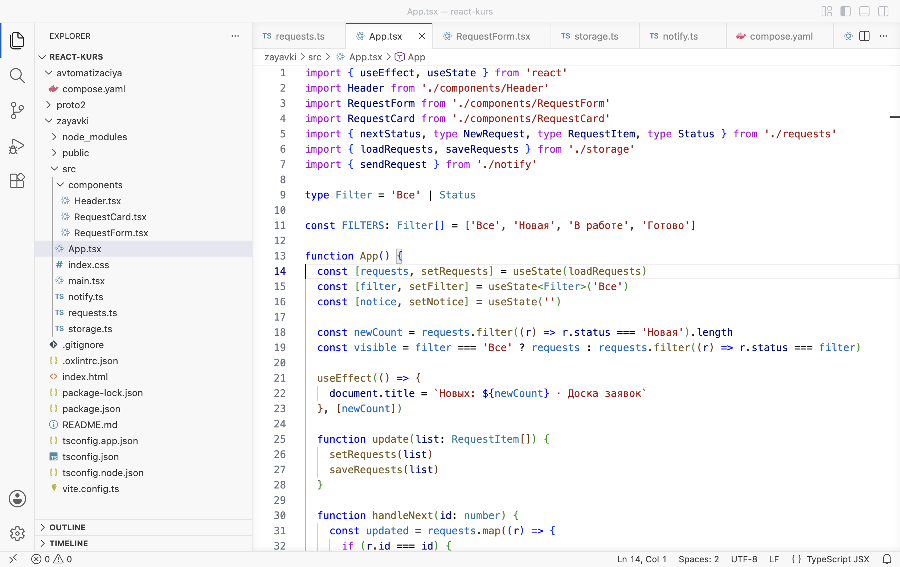
Так должен выглядеть App.tsx: эффект в строках 21–23 - Посмотрите на вкладку
Обновите страницу. На вкладке браузера вместо «zayavki» — «Новых: 3 · Доска заявок». Нажмите «Взять в работу» в первой карточке: на вкладке «Новых: 2».
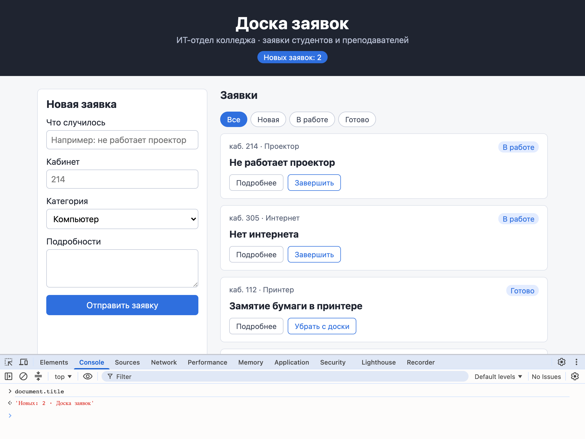
Заголовок после «Взять в работу»: «Новых: 2 · Доска заявок» (на кадре — ответ консоли на document.title) Заголовок вкладки можно проверить и в консоли: наберите
document.titleи нажмите Enter.
РазбираемсяЧто записано в эффекте
const newCount = requests.filter((r) => r.status === 'Новая').length const visible = filter === 'Все' ? requests : requests.filter((r) => r.status === filter) useEffect(() => { 1 document.title = `Новых: ${newCount} · Доска заявок` 2 }, [newCount]) 3
- 1
«После отрисовки выполни вот это».
useEffectполучает стрелочную функцию — сам эффект. - 2
Действие эффекта: записать текст в заголовок вкладки.
document— вся страница браузера,title— её заголовок. Обратные кавычки`…`— строка, в которую через${…}подставляется значение, здесь число новых заявок. - 3
Массив зависимостей: «запускай эффект снова, только если изменилось
newCount». Щелчок по фильтру перерисовывает доску, но число новых не меняет — и эффект не запускается.
Почему не записать document.title = … прямо в теле App, рядом с newCount? Тело компонента React вызывает при каждой отрисовке, иногда несколько раз подряд, в том числе без переноса результата на страницу. Действия во внешнем мире в теле компонента выполнялись бы в непредсказуемые моменты. Эффект выполняется в определённый момент — после того как страница обновлена.
Утверждение «эффект запускается, только когда изменилось newCount» стоит проверить. Следующий раздел — опыт с журналом в консоли.
§3Когда запускается эффект
ДелаемОпыт: журнал отрисовок и эффектов
- Замените App.tsx версией с журналом
Добавлены две строки
console.log: одна печатает при каждой отрисовкеApp, другая — при каждом запуске эффекта.zayavki/src/App.tsx · опыт import { useEffect, useState } from 'react' import Header from './components/Header' import RequestForm from './components/RequestForm' import RequestCard from './components/RequestCard' import { nextStatus, type NewRequest, type RequestItem, type Status } from './requests' import { loadRequests, saveRequests } from './storage' import { sendRequest } from './notify' type Filter = 'Все' | Status const FILTERS: Filter[] = ['Все', 'Новая', 'В работе', 'Готово'] function App() { console.log('отрисовка App') const [requests, setRequests] = useState(loadRequests) const [filter, setFilter] = useState<Filter>('Все') const [notice, setNotice] = useState('') const newCount = requests.filter((r) => r.status === 'Новая').length const visible = filter === 'Все' ? requests : requests.filter((r) => r.status === filter) useEffect(() => { console.log('эффект: заголовок, новых', newCount) document.title = `Новых: ${newCount} · Доска заявок` }, [newCount]) function update(list: RequestItem[]) { setRequests(list) saveRequests(list) } function handleNext(id: number) { const updated = requests.map((r) => { if (r.id === id) { return { ...r, status: nextStatus(r.status) } } return r }) update(updated) } async function handleAdd(data: NewRequest) { const created: RequestItem = { ...data, id: Date.now(), status: 'Новая' } update([created, ...requests]) setNotice('Заявка добавлена. Отправляем уведомление…') const sent = await sendRequest(created) if (sent) { setNotice('Заявка добавлена, уведомление отправлено.') } else { setNotice('Заявка добавлена, но уведомление не отправлено: сервер автоматизации недоступен.') } } function handleRemove(id: number) { update(requests.filter((r) => r.id !== id)) } return ( <> <Header newCount={newCount} /> <main className="board"> <RequestForm onAdd={handleAdd} /> <section className="list"> <h2>Заявки</h2> {notice !== '' && <p className="notice">{notice}</p>} <div className="filters"> {FILTERS.map((f) => ( <button key={f} className={f === filter ? 'active' : ''} onClick={() => setFilter(f)}> {f} </button> ))} </div> {visible.length === 0 && <p className="empty">Заявок с таким статусом нет</p>} {visible.map((r) => ( <RequestCard key={r.id} title={r.title} room={r.room} category={r.category} details={r.details} status={r.status} onNext={() => handleNext(r.id)} onRemove={() => handleRemove(r.id)} /> ))} </section> </main> </> ) } export default App
- Обновите страницу с открытой консолью
Откройте консоль (F12, вкладка Console) и нажмите F5.
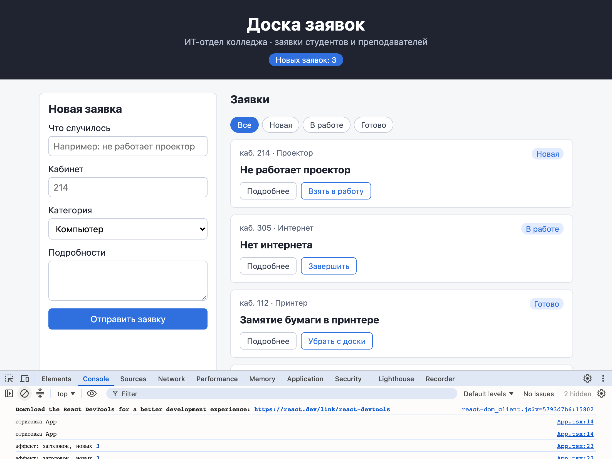
Загрузка: две отрисовки и два запуска эффекта - Нажмите фильтр «Новая»
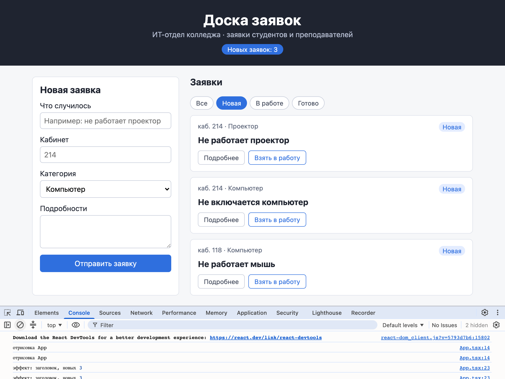
Щелчок по фильтру: две новые отрисовки, эффект не запускался - Нажмите «Все», затем «Взять в работу» в первой карточке
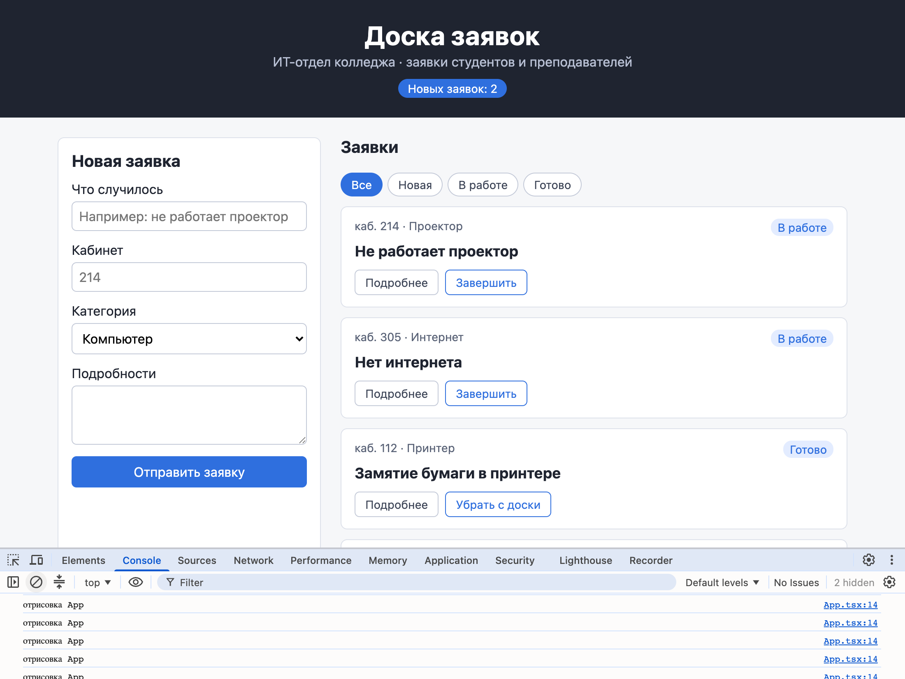
После «Взять в работу» эффект запустился один раз: новых 2 - Уберите массив зависимостей
Замените App.tsx версией, где у эффекта нет второго аргумента. Обновите страницу, очистите консоль кнопкой ⊘, нажмите фильтры «Новая» и «Готово».
zayavki/src/App.tsx · опыт, строки 22–25 useEffect(() => { console.log('эффект: заголовок, новых', newCount) document.title = `Новых: ${newCount} · Доска заявок` })
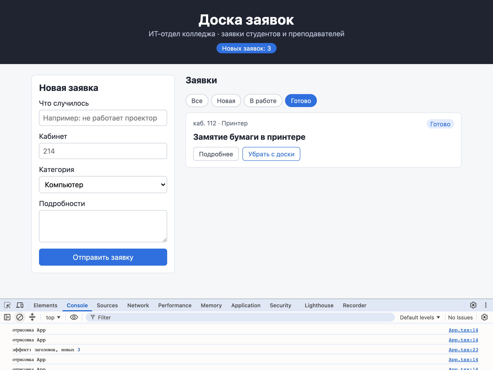
Без массива: эффект запускается после каждой отрисовки, хотя число не менялось
РазбираемсяЧто показал журнал
Почему всё по два раза. В main.tsx приложение обёрнуто в <StrictMode> — «строгий режим». Во время разработки он нарочно вызывает каждую функцию компонента дважды, а эффекты при первом показе запускает, очищает и запускает снова. Так быстрее обнаруживаются ошибки, о которых §5. В собранном для публикации приложении (npm run build) двойных вызовов нет.
Щелчок по фильтру меняет состояние filter: App отрисовывается, а newCount остаётся 3. React сравнивает значения в массиве зависимостей с прошлыми. Они не изменились, поэтому эффект не запускается. После «Взять в работу» newCount стал 2 — эффект запустился и записал новый заголовок.
| Запись | Когда запускается эффект | Пример |
|---|---|---|
useEffect(f, [a, b]) | После первой отрисовки и после каждой, в которой изменилось a или b | Заголовок вкладки от newCount |
useEffect(f, []) | Один раз, после первой отрисовки | Подписка на клавиши окна (§5) |
useEffect(f) | После каждой отрисовки | Почти никогда не нужно |
ДелаемОпыт: забытая зависимость
- Оставьте массив пустым
Замените App.tsx версией, где у эффекта
[]вместо[newCount], и выполните во втором терминалеnpm run lint.zayavki/src/App.tsx · опыт, строки 21–23 useEffect(() => { document.title = `Новых: ${newCount} · Доска заявок` }, [])
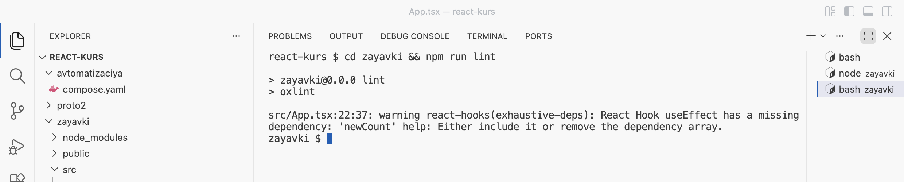
Линтер: в эффекте используется newCount, а в массиве его нет - Проверьте заголовок
Обновите страницу, нажмите «Взять в работу» в первой карточке и наберите в консоли
document.title. Новых заявок стало 2, а заголовок остался прежним.Заголовок застыл на «Новых: 3» - Верните правильную версию
Замените App.tsx версией из §2 (с
[newCount]) и сохраните.
Предупреждение React Hook useEffect has a missing dependency: 'newCount' переводится как «у хука useEffect пропущена зависимость newCount». Правило такое: в массив зависимостей записывают все значения из компонента — состояние, props, вычисленные переменные, — которые используются внутри эффекта. Линтер проверяет это сам.
Эффект с заголовком только записывает значение. Таймер нужно ещё и отменять.
§4Таймер и очистка
ДелаемСообщение исчезает через 5 секунд
- Замените содержимое App.tsx
Добавлен второй эффект, строки 25–31.
zayavki/src/App.tsx import { useEffect, useState } from 'react' import Header from './components/Header' import RequestForm from './components/RequestForm' import RequestCard from './components/RequestCard' import { nextStatus, type NewRequest, type RequestItem, type Status } from './requests' import { loadRequests, saveRequests } from './storage' import { sendRequest } from './notify' type Filter = 'Все' | Status const FILTERS: Filter[] = ['Все', 'Новая', 'В работе', 'Готово'] function App() { const [requests, setRequests] = useState(loadRequests) const [filter, setFilter] = useState<Filter>('Все') const [notice, setNotice] = useState('') const newCount = requests.filter((r) => r.status === 'Новая').length const visible = filter === 'Все' ? requests : requests.filter((r) => r.status === filter) useEffect(() => { document.title = `Новых: ${newCount} · Доска заявок` }, [newCount]) useEffect(() => { if (notice === '') { return } const timer = setTimeout(() => setNotice(''), 5000) return () => clearTimeout(timer) }, [notice]) function update(list: RequestItem[]) { setRequests(list) saveRequests(list) } function handleNext(id: number) { const updated = requests.map((r) => { if (r.id === id) { return { ...r, status: nextStatus(r.status) } } return r }) update(updated) } async function handleAdd(data: NewRequest) { const created: RequestItem = { ...data, id: Date.now(), status: 'Новая' } update([created, ...requests]) setNotice('Заявка добавлена. Отправляем уведомление…') const sent = await sendRequest(created) if (sent) { setNotice('Заявка добавлена, уведомление отправлено.') } else { setNotice('Заявка добавлена, но уведомление не отправлено: сервер автоматизации недоступен.') } } function handleRemove(id: number) { update(requests.filter((r) => r.id !== id)) } return ( <> <Header newCount={newCount} /> <main className="board"> <RequestForm onAdd={handleAdd} /> <section className="list"> <h2>Заявки</h2> {notice !== '' && <p className="notice">{notice}</p>} <div className="filters"> {FILTERS.map((f) => ( <button key={f} className={f === filter ? 'active' : ''} onClick={() => setFilter(f)}> {f} </button> ))} </div> {visible.length === 0 && <p className="empty">Заявок с таким статусом нет</p>} {visible.map((r) => ( <RequestCard key={r.id} title={r.title} room={r.room} category={r.category} details={r.details} status={r.status} onNext={() => handleNext(r.id)} onRemove={() => handleRemove(r.id)} /> ))} </section> </main> </> ) } export default App
- Отправьте заявку
Обновите страницу и отправьте заявку «Не работает звонок», кабинет «Вахта». Над списком появилось сообщение.
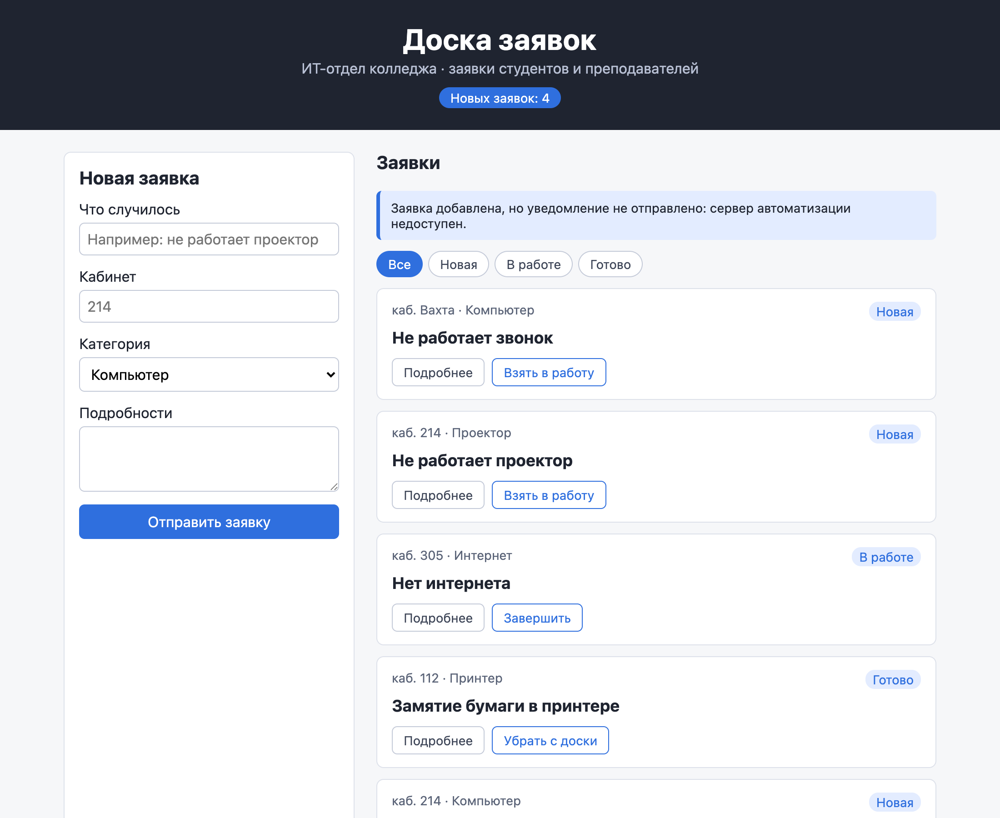
Сообщение над списком сразу после отправки - Подождите 5 секунд
Сообщение исчезло само.
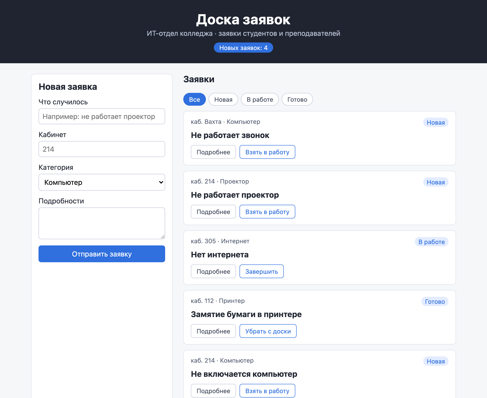
Через 5 секунд сообщения нет
РазбираемсяКак работает таймер
Чайник поставили на плиту и завели кухонный таймер на 5 минут. Если через минуту передумали и поставили другой чайник, старый таймер выключают и заводят новый. Иначе старый зазвонит раньше времени и чай заварится не в том чайнике.
Кухонный таймер выключает человек. В React старый таймер выключает функция очистки, которую React вызывает сам.
useEffect(() => { 1 if (notice === '') { 2 return } const timer = setTimeout(() => setNotice(''), 5000) 3 return () => clearTimeout(timer) 4 }, [notice]) 5
- 1
Второй эффект. В компоненте может быть несколько эффектов, каждый отвечает за своё.
- 2
Если сообщения нет, делать нечего:
returnзавершает эффект. - 3
setTimeout(функция, 5000)— «через 5000 миллисекунд, то есть 5 секунд, выполни функцию». Функция стирает сообщение.setTimeoutвозвращает номер таймера, он сохраняется вtimer. - 4
Функция очистки: «если этот эффект больше не нужен, выключи таймер».
clearTimeout(timer)отменяет таймер по номеру. - 5
Эффект зависит от
notice: каждый новый текст сообщения — новый таймер на 5 секунд.
Пошаговый разбор ниже показывает, когда React вызывает очистку. После отправки заявки сообщение меняется дважды: сначала «Отправляем уведомление…», через долю секунды — итоговое.
useEffect(() => { if (notice === '') { return } const timer = setTimeout(() => setNotice(''), 5000) return () => clearTimeout(timer) }, [notice])
- Первое сообщение — таймер А
noticeстал «Заявка добавлена. Отправляем уведомление…». Эффект заводит таймер А на 5 секунд.таймер Асработает через 5 с - Сообщение сменилось — очистка
Ответ сервера пришёл через полсекунды,
noticeсменился на итоговый. Перед новым запуском эффекта React вызывает очистку прошлого запуска: таймер А выключен.таймер Авыключен - Второе сообщение — таймер Б
Эффект запускается с новым текстом и заводит таймер Б на полные 5 секунд.
таймер Бсработает через 5 с - Таймер Б срабатывает
setNotice(''): сообщение стирается. Эффект запускается снова, но сообщение пустое, и он сразу завершается (строка 26). - Что было бы без очистки
Таймер А остался бы включённым и через 5 секунд от первого сообщения стёр бы второе. Второе сообщение провисело бы меньше 5 секунд.
Таймер очищается перед каждым новым запуском. Подписке на события окна очистка тоже нужна, и без неё ошибка видна сразу.
§5Клавиша Esc: подписка и отписка
Клавиша Esc должна сбрасывать фильтр на «Все», где бы ни стоял курсор. Обработчик onKeyDown у кнопки здесь не поможет: он срабатывает, только когда фокус на этой кнопке. Нужно подписаться на нажатия клавиш во всём окне браузера: window.addEventListener('keydown', функция). Окно — внешняя система, значит, подписка оформляется эффектом.
ДелаемОпыт: подписка без отписки
- Замените App.tsx версией для опыта
Эффект подписывается на клавиши и печатает в консоль при Esc, но не возвращает функцию очистки.
zayavki/src/App.tsx · опыт, строки 33–41 useEffect(() => { function handleKey(event: KeyboardEvent) { if (event.key === 'Escape') { console.log('Esc: фильтр сброшен') setFilter('Все') } } window.addEventListener('keydown', handleKey) }, [])
- Нажмите Esc
Обновите страницу, очистите консоль, выберите фильтр «Готово», щёлкните по пустому месту страницы и нажмите Esc. Сообщение в консоли с цифрой 2 — оно напечатано дважды за одно нажатие.
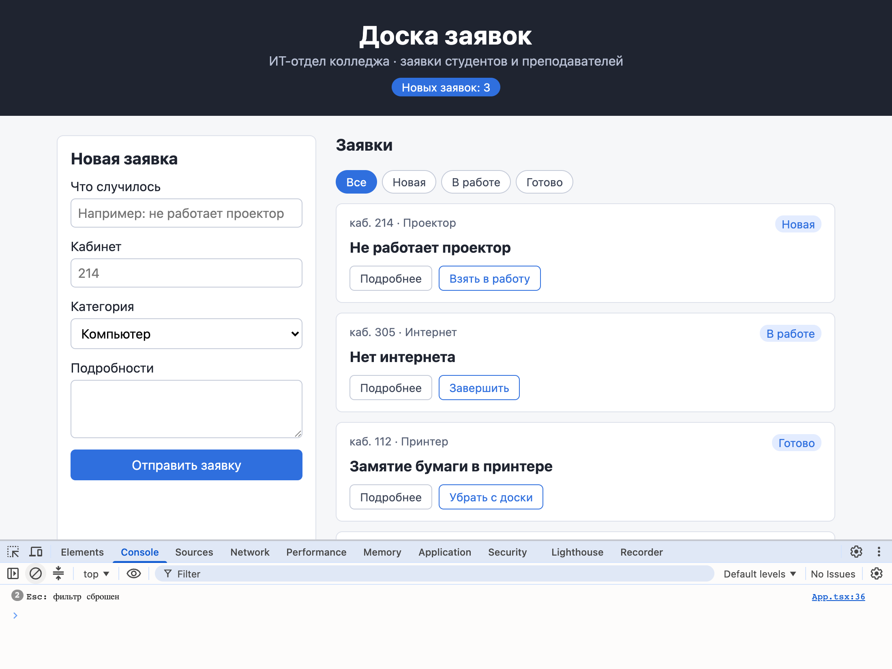
Одно нажатие — два срабатывания: в окне висят две подписки
РазбираемсяОткуда вторая подписка
Строгий режим при первом показе запускает эффект, очищает его и запускает снова (§3). Очистки в опыте нет, поэтому первая подписка осталась, и вторая добавилась к ней. В собранном приложении то же происходило бы при каждом удалении и повторном показе компонента: подписки накапливались бы, и одно нажатие запускало бы обработчик много раз. Строгий режим нарочно делает так, чтобы забытая очистка была видна сразу.
ДелаемПодписка с отпиской
- Замените содержимое App.tsx
Это итоговая версия главы: три эффекта. Третий в строках 33–41 возвращает функцию отписки.
zayavki/src/App.tsx import { useEffect, useState } from 'react' import Header from './components/Header' import RequestForm from './components/RequestForm' import RequestCard from './components/RequestCard' import { nextStatus, type NewRequest, type RequestItem, type Status } from './requests' import { loadRequests, saveRequests } from './storage' import { sendRequest } from './notify' type Filter = 'Все' | Status const FILTERS: Filter[] = ['Все', 'Новая', 'В работе', 'Готово'] function App() { const [requests, setRequests] = useState(loadRequests) const [filter, setFilter] = useState<Filter>('Все') const [notice, setNotice] = useState('') const newCount = requests.filter((r) => r.status === 'Новая').length const visible = filter === 'Все' ? requests : requests.filter((r) => r.status === filter) useEffect(() => { document.title = `Новых: ${newCount} · Доска заявок` }, [newCount]) useEffect(() => { if (notice === '') { return } const timer = setTimeout(() => setNotice(''), 5000) return () => clearTimeout(timer) }, [notice]) useEffect(() => { function handleKey(event: KeyboardEvent) { if (event.key === 'Escape') { setFilter('Все') } } window.addEventListener('keydown', handleKey) return () => window.removeEventListener('keydown', handleKey) }, []) function update(list: RequestItem[]) { setRequests(list) saveRequests(list) } function handleNext(id: number) { const updated = requests.map((r) => { if (r.id === id) { return { ...r, status: nextStatus(r.status) } } return r }) update(updated) } async function handleAdd(data: NewRequest) { const created: RequestItem = { ...data, id: Date.now(), status: 'Новая' } update([created, ...requests]) setNotice('Заявка добавлена. Отправляем уведомление…') const sent = await sendRequest(created) if (sent) { setNotice('Заявка добавлена, уведомление отправлено.') } else { setNotice('Заявка добавлена, но уведомление не отправлено: сервер автоматизации недоступен.') } } function handleRemove(id: number) { update(requests.filter((r) => r.id !== id)) } return ( <> <Header newCount={newCount} /> <main className="board"> <RequestForm onAdd={handleAdd} /> <section className="list"> <h2>Заявки</h2> {notice !== '' && <p className="notice">{notice}</p>} <div className="filters"> {FILTERS.map((f) => ( <button key={f} className={f === filter ? 'active' : ''} onClick={() => setFilter(f)}> {f} </button> ))} </div> {visible.length === 0 && <p className="empty">Заявок с таким статусом нет</p>} {visible.map((r) => ( <RequestCard key={r.id} title={r.title} room={r.room} category={r.category} details={r.details} status={r.status} onNext={() => handleNext(r.id)} onRemove={() => handleRemove(r.id)} /> ))} </section> </main> </> ) } export default App
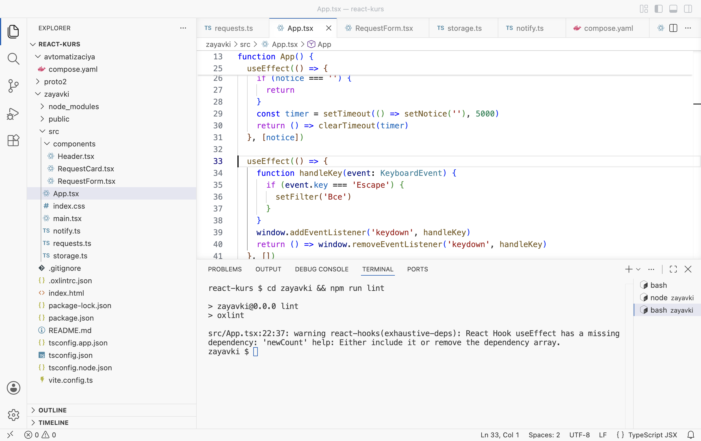
Так должен выглядеть App.tsx: три эффекта в строках 21–41 - Проверьте Esc
Обновите страницу, выберите фильтр «Готово», щёлкните по пустому месту и нажмите Esc. Фильтр вернулся на «Все».
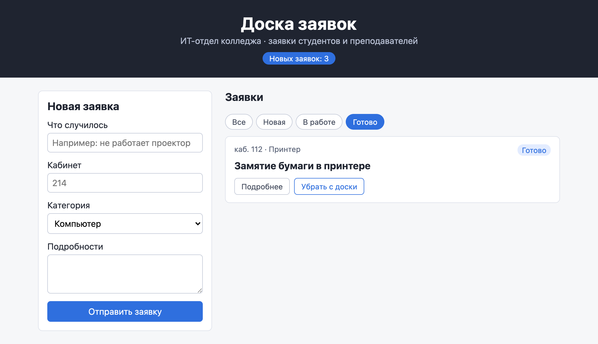
До нажатия: фильтр «Готово» 
После Esc: фильтр «Все»
РазбираемсяЧто записано в третьем эффекте
useEffect(() => { function handleKey(event: KeyboardEvent) { 1 if (event.key === 'Escape') { 2 setFilter('Все') } } window.addEventListener('keydown', handleKey) 3 return () => window.removeEventListener('keydown', handleKey) 4 }, []) 5
- 1
Функция, которую браузер вызовет при нажатии любой клавиши.
KeyboardEvent— тип события клавиатуры. - 2
event.key— название нажатой клавиши. Фильтр сбрасывается только по Esc. - 3
Подписка: «окно, при нажатии клавиши вызывай
handleKey». - 4
Отписка: та же функция снимается с окна. Передаётся именно
handleKey— та самая, что подписана: поэтому она объявлена внутри эффекта отдельной функцией с именем. - 5
Пустой массив: подписаться один раз при первом показе.
setFilterReact не меняет между отрисовками, поэтому линтер не требует вписать его в массив.
Эффекты связывают доску с вкладкой, таймером и окном. Но эффект легко поставить и туда, где он не нужен.
§6Когда эффект не нужен
Список видимых заявок visible в главе 1.5 вычисляется при отрисовке. Его можно было бы хранить в отдельном состоянии и обновлять эффектом при изменении фильтра или заявок. Опыт показывает, почему так не делают.
ДелаемОпыт: visible через эффект
- Замените App.tsx версией для опыта
zayavki/src/App.tsx · опыт, строки 17–24 const newCount = requests.filter((r) => r.status === 'Новая').length const [visible, setVisible] = useState(requests) console.log('отрисовка App, видно заявок', visible.length) useEffect(() => { setVisible(filter === 'Все' ? requests : requests.filter((r) => r.status === filter)) }, [filter, requests])
- Запустите линтер
Во втором терминале выполните
npm run lint.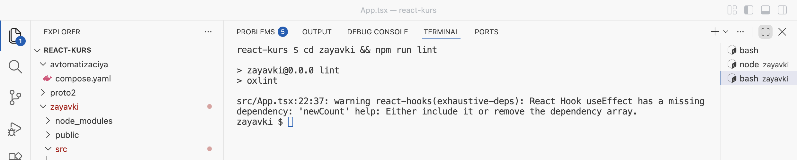
Линтер: изменение состояния прямо в эффекте вызывает лишние отрисовки - Посмотрите журнал
Обновите страницу, очистите консоль и нажмите фильтр «Новая».
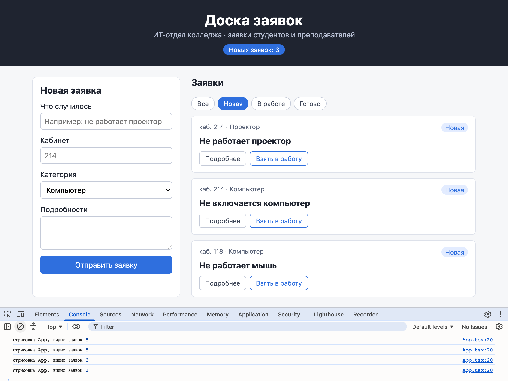
Один щелчок — две лишние отрисовки со старым списком - Верните итоговую версию
Замените App.tsx итоговой версией из §5 и сохраните.
РазбираемсяГде что решать
В журнале после щелчка сначала две отрисовки с прежним списком (видно 5 заявок), потом эффект меняет visible, и ещё две отрисовки с новым (видно 3). Первая пара отрисовок лишняя: на мгновение страница показывает старый список. Линтер называет это set-state-in-effect: «изменение состояния в эффекте вызывает цепочку отрисовок». Его подсказка: вычислять значение при отрисовке или менять его в обработчике события, которое вызвало изменение.
| Задача | Где решать | Пример на доске |
|---|---|---|
| Значение получается из состояния или props | Вычислить при отрисовке | newCount, visible |
| Реакция на действие пользователя | В обработчике события | Сохранение в localStorage в update, сообщение в handleAdd |
| Связь с внешней системой, которая должна совпадать с состоянием | Эффект | Заголовок вкладки, таймер, подписка на клавиши, загрузка из базы |
Вопрос для проверки: «Это нужно, потому что компонент показан на странице, или потому что пользователь что-то сделал?» Если из-за действия пользователя — место в обработчике. Эффект нужен, когда внешнее должно совпадать с тем, что сейчас на странице, независимо от того, что к этому привело.
Проект после главы
Архив содержит проект zayavki в состоянии конца главы: три эффекта в App.tsx — заголовок вкладки, исчезающее сообщение, сброс фильтра клавишей Esc. Распаковка и запуск — как у архива в начале главы.
§7Частые ошибки
Предупреждения получены командой npm run lint в проекте zayavki, ошибка React — в консоли браузера.
| Что видно | Почему | Что сделать |
|---|---|---|
Линтер: react-hooks(exhaustive-deps): React Hook useEffect has a missing dependency: 'newCount' | Значение используется в эффекте, но не записано в массив зависимостей; эффект работает со старым значением | Вписать значение в массив: [newCount] |
Линтер: react(set-state-in-effect): Calling setState synchronously within an effect can trigger cascading renders | Эффект пересчитывает состояние из другого состояния | Вычислять значение при отрисовке или менять в обработчике события |
Консоль: Maximum update depth exceeded. This can happen when a component calls setState inside useEffect, but useEffect either doesn't have a dependency array, or one of the dependencies changes on every render. | Эффект без массива зависимостей меняет состояние: изменение вызывает отрисовку, отрисовка — эффект, и так без конца | Добавить массив зависимостей или убрать изменение состояния из эффекта |
| Одно нажатие клавиши обрабатывается дважды | Подписка в эффекте без функции отписки | Вернуть из эффекта () => window.removeEventListener('keydown', handleKey) |
| Сообщение исчезает раньше времени | Таймер из прошлого запуска эффекта не отменён | Вернуть из эффекта () => clearTimeout(timer) |
| В консоли всё печатается дважды | Строгий режим <StrictMode> во время разработки вызывает компоненты и эффекты повторно | Ничего: это проверка. В собранном приложении двойных вызовов нет |
§8Проверьте себя
Что такое эффект и когда React его выполняет?
Функция, переданная в useEffect, для связи компонента с внешним миром. React выполняет её после того, как перенёс разметку на страницу.
Чем отличаются useEffect(f, [x]), useEffect(f, []) и useEffect(f)?
Первый запускается после первой отрисовки и когда изменился x. Второй — один раз после первой отрисовки. Третий — после каждой отрисовки.
Зачем эффект возвращает функцию?
Это функция очистки. React вызывает её перед следующим запуском эффекта и при удалении компонента. В ней отменяют таймеры и подписки, иначе они накапливаются.
Почему в разработке эффект при загрузке запускается дважды?
Строгий режим нарочно запускает эффект, очищает и запускает снова, чтобы забытая очистка была видна сразу. В собранном приложении эффект запускается один раз.
Нужен ли эффект, чтобы считать newCount?
Нет. newCount вычисляется из состояния при отрисовке. Эффект с setState дал бы лишние отрисовки и устаревшее значение на мгновение.
Сделайте так, чтобы заголовок вкладки был просто «Доска заявок», когда новых заявок нет. Что изменить?
В первом эффекте выбрать текст тернарным оператором: document.title = newCount > 0 ? `Новых: ${newCount} · Доска заявок` : 'Доска заявок'. Массив зависимостей остаётся [newCount].
Шпаргалка
import { useEffect } from 'react'useEffect(() => { … }, [x])useEffect(() => { … }, [])const t = setTimeout(f, 5000); return () => clearTimeout(t)window.addEventListener('keydown', h)return () => window.removeEventListener('keydown', h)document.title = '…'Итог главы
Эффект — функция в useEffect, которую React выполняет после переноса разметки на страницу. Эффекты связывают компонент с внешними системами: заголовком вкладки, таймерами, событиями окна, а дальше — с сетью и базой данных. Массив зависимостей задаёт, когда эффект запускается снова: при изменении перечисленных значений, один раз при пустом массиве или после каждой отрисовки без массива. В массив записывают всё, что эффект использует, — линтер проверяет это правилом exhaustive-deps. Функция, которую эффект возвращает, отменяет его работу: выключает таймер, снимает подписку. React вызывает её перед следующим запуском и при удалении компонента. Строгий режим в разработке проверяет, что очистка есть. Значения, которые вычисляются из состояния, и реакции на действия пользователя эффектов не требуют. Доска показывает число новых заявок на вкладке, прячет сообщение через 5 секунд и сбрасывает фильтр по Esc.
Источники
- react.dev — Synchronizing with Effects
- react.dev — You Might Not Need an Effect
- react.dev — useEffect
- react.dev — StrictMode
- MDN — setTimeout()
- MDN — addEventListener()